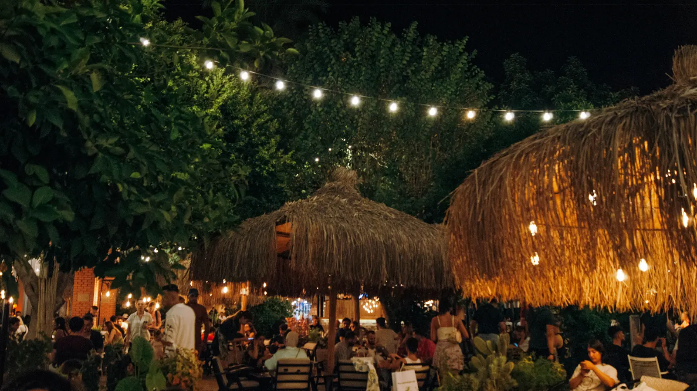
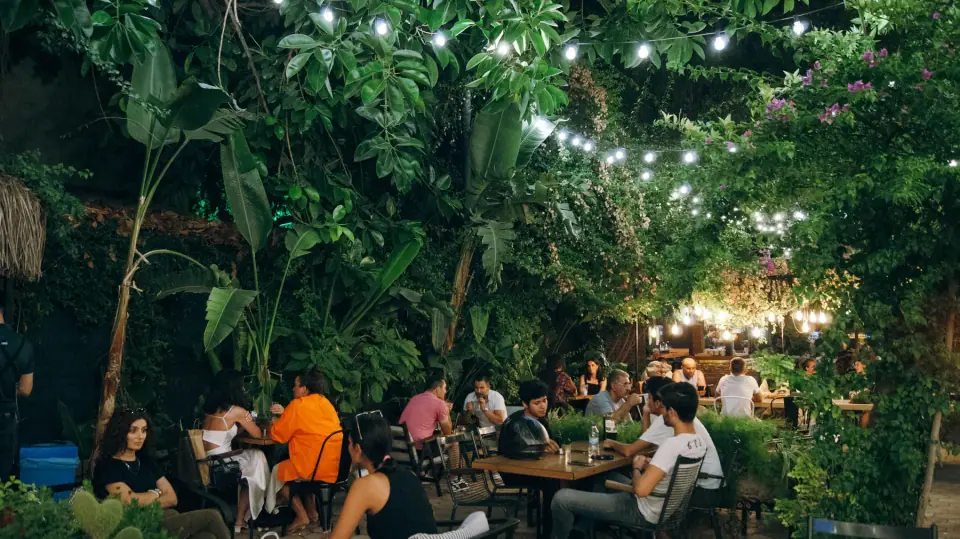

Cafe & Restoran · Kaleiçi
Tarihi surların içinde, yemyeşil bir bahçe.
Yemyeşil bahçemiz ve çiçeklerimizle, şehrin koşuşturmasından biraz uzaklaşabileceğiniz huzurlu bir yer.
- Şimdi
- SaatlerPzt-Paz 09:00–01:00
- AdresBarbaros Mah. Kocatepe Sok. No:4 (Atatürk Cad.), Muratpaşa/Antalya
- Telefon+90 242 241 61 62
Tarihi atmosfer
Luna Garden, yüzyıllar öncesine dayanan Kaleiçi surlarıyla çevrili.
Geniş açık hava oturma alanımız bir bahçe olarak tasarlandı. Patenle servis yapan ekibimiz, ailenin her bireyinin kendini rahat hissetmesini sağlıyor.

İletişim
Bahçemiz Kocatepe Sokak'ta
| Pazartesi | 09:00–01:00 |
|---|---|
| Salı | 09:00–01:00 |
| Çarşamba | 09:00–01:00 |
| Perşembe | 09:00–01:00 |
| Cuma | 09:00–01:00 |
| Cumartesi | 09:00–01:00 |
| Pazar | 09:00–01:00 |
- Rezervasyon almıyoruz.
- Doğum günü, grup buluşması ve aile yemekleri için ek ücret almıyoruz.
- Bize Instagram'dan mesajla da ulaşabilirsiniz.